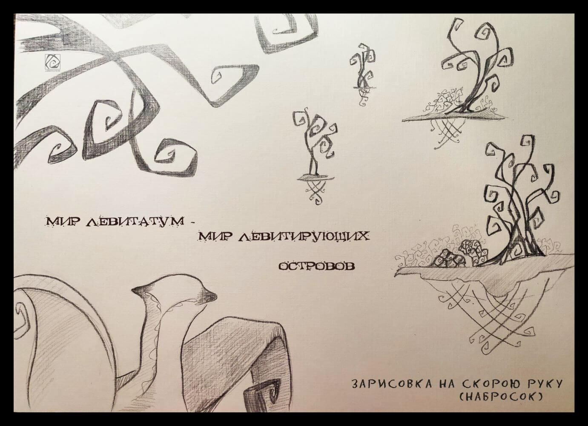

Мой Мир

У меня есть одна необычная способность.
Я вижу другой мир.
Он сильно отличается от нашего и населён разнообразной жизнью.
Первый раз я обнаружила его ещё в детстве и тогда же поняла, что больше никто его не видит.
Этот удивительный мир я назвала - Левитатум. За многие годы у меня накопились образы, истории, наблюдения, которыми пришло время поделиться с вами.
Они
Заглядывая в мир Левитатум, я чаще вижу вот этих существ.
Они самая многочисленная форма жизни.
Как их зовут
Никому не рассказывая о мире Левитатум, мне не было нужды именовать его обитателей. Когда же появилось желание делиться этими историями, я поняла, что нужно будет их как-то называть.
Около года я ломала голову и подбирала варианты названий главным жителям мира Левитатум. Их было сотни.. Я пробовала разные подходы. Искала в других языках. Миксовала слова. Пробовала случайный подбор букв. Все тщетно! Ни один вариант так и не лёг, не прижился.
Несколько раз я забрасывала эту идею «на дальнюю полку», надеясь, что подсознание все сделает само. Знаете, так бывает? Этот трюк так же не помог.
Ах, так! – обижалась я, - Не хотите называться, останетесь просто Неведомыми Зверюшками!
Но скоро, с энтузиазмом, вновь пыталась понять, как же называются они на человеческом?
И вот сегодня, как раз к запланированному посту (концовка которого должна была быть другой) я наконец поняла что они..
.. Левитяне! А если ласково – Левитятки))) И никак иначе )))
И ведь это слово лежало на поверхности.
О ягодных насекомышах
В Мире Левитатум, на пышных ягодных кустах, живут особые насекомыши. Особенность их в том, что при контакте со слюной они способны устраивать микровзрывы. Поэтому, собирая ягоду, так важно их вытряхивать и вообще глядеть в оба! Маленькие взрывы во рту никого не обрадуют.
Из этой особенности насекомышей возникло веселое развлечение: молодые Левитятки подходят к кусту и оплёвывают его, вызывая серию микровзрывов. Ночь – лучшее время для этой забавы.
Острова

Не могу сказать, что знаю о Мире Левитатум всё.
Я вижу его как бы сквозь мутное стекло или толщу воды. Иногда чётко проступают подробности и частные детали. В другой раз удаётся охватить и понять общую картину мироустройства.
Мир Левитатум открывался, и продолжает открываться мне, постепенно.
Первое что я о нём когда-то поняла: это мир левитирующих островов, отсюда и название. На каждом острове обязательно растёт вихревое дерево. Правильнее было бы сказать, что это деревья отращивают себе острова.
Дело в том, что именно вокруг молодых корешков начинает накапливаться земля. Разрастается дерево, разрастается и остров.
Острова бывают разных размеров. Иногда они соединяются. Кроме главного дерева, на острове могут жить и другие растения. Но без вихревого дерева не бывает островов. Когда вихревое дерево умирает, остров рассыпается. Умирание, как и зарождение островов, это крайне редкое явление.
Мир Левитатум – мир симбиоза*, всё живое состоит в разнообразных сложных и неразрывных связях друг с другом, впрочем, так и в нашем с вами мире, но в Левитатуме эта связь гораздо явственнее. Вихревые деревья и Левитяне – основные существа-симбионты.
*симбиоз, это наиболее подходящее понятие из известных мне.